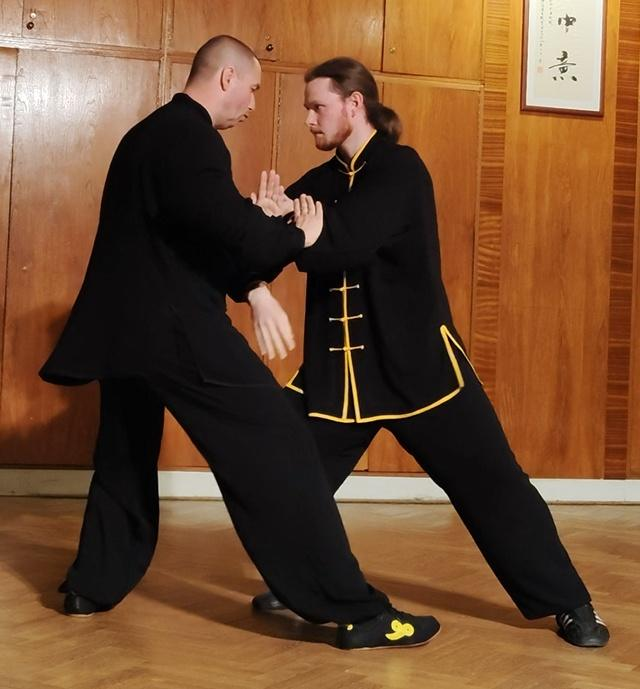

Ngoài Thái Cực
Thái Cực không phải là môn nội gia duy nhất có điều để nói về đôi bàn chân. Trên cùng giá sách là Hình Ý Quyền, Bát Quái Chưởng và các kỹ kích Trần thức — ba hệ thống có bộ pháp trông chẳng giống Thái Cực chút nào mà vẫn dựa trên cùng hai ý tưởng: biết chân nào thực, và để eo dẫn dắt. Bài này đọc điều mà mỗi môn thực sự dạy về việc bước đi.

Photo: Mojmir Churavy, CC0, via Wikimedia Commons.


Ba trường phái nữa
Ba môn này thường được xếp cùng Thái Cực vào họ “nội gia”, nhưng bộ pháp của chúng xuất phát từ những chỗ rất khác nhau. Hình Ý là trực tiếp nhất: nó tiến theo đường thẳng và bài tập cơ bản của nó là một thế đứng trụ, không phải một bài quyền. Bát Quái được định nghĩa bởi bộ pháp của nó — toàn bộ môn được tổ chức quanh việc đi một vòng tròn. Trần thức là dòng họ Thái Cực cổ nhất và giữ lại bộ pháp giậm bùng nổ mà các dòng sau đã làm mềm đi.
Điều khiến chúng đáng đọc cùng nhau là chúng bất đồng về mọi thứ ngoại trừ hai quy tắc mà Thái Cực cũng khăng khăng đòi hỏi. Sự đồng thuận ấy mới là phần thú vị: ba hệ thống trông hoàn toàn khác nhau trên sàn lại hội tụ ở cùng một logic trọng lượng.
Hình Ý: thế đứng trụ
Thế đứng cơ bản của Hình Ý (tam thể thức) là một thế đứng trụ với sự phân chia trọng lượng trước/sau rõ ràng, giữ yên trong thời gian dài. Mục đích của sự đứng yên là làm cho việc phân bố trọng lượng không thể chối cãi: nếu bạn đang đứng 50/50, thế đứng sẽ cho bạn biết trong vòng một phút. Bản dịch tiếng Việt giữ logic ấy rõ ràng — thế đứng dạy thân thể giữ một chân thực và chân kia hư trong khi không làm gì khác, đó là cùng kỹ năng mà Thái Cực gọi là phân hư thực.
Hình Ý sau đó di chuyển theo đường thẳng, tiến lên bằng cách đẩy từ chân sau. Hầu như không có từ vựng bước ngang; môn này giải bài toán góc độ bằng cách đi thẳng tới và xoay vào phút chót. Sự chuyển giao thì hẹp nhưng sắc: cú đẩy chân sau chính là cơ học đứng sau một bước đầu tiên đầy lực.
Bát Quái: đi vòng
Bát Quái là môn duy nhất trong ba môn mà bộ pháp là chương trình học của nó. Bài tập cốt lõi là đi một vòng tròn, và truyền thống mô tả chuyển động theo sáu hướng dọc theo vòng tròn đó. Bản thân bước đi — “bước đi trong bùn” — có bàn chân chuyển động trượt tới sát bàn chân chống, mũi chân trước, rồi trọng lượng mới theo sau. Mọi thứ được tập ở một góc so với đối thủ thay vì đối đầu trực diện.
Sự chuyển giao lên sân là trực tiếp nhất trong toàn bộ giá sách này. Chuyển động ngang dọc theo một đường cong, thực hiện bằng một bước trượt có kiểm soát với trọng lượng đến muộn, chính xác là điều một tay vợt làm khi phục hồi dọc đường biên ngang. Bát Quái là môn duy nhất ở đây tập mẫu cụ thể ấy như bài tập chính của nó chứ không phải như một bài phụ.
Trần thức: giậm bùng nổ
Trần thức giữ lại điều mà các dòng Thái Cực sau này đã làm mịn đi. Các kỹ kích pháp của nó dùng bước giậm để đưa trọng lượng xuống dưới vào một cú đánh, và bước này được dạy như một sự rơi thực sự của toàn thân, không phải một cái gõ chân. Đây là cùng bước giậm xuất hiện trong năm bước có tên của Paul Crompton, và các nguồn xử lý nó y hệt: một công cụ chuyên biệt để đưa trọng lượng, không phải một cách di chuyển.
Lời thận trọng mà các nguồn gắn vào đáng được giữ lại. Một bước giậm thì ồn ào, cam kết và khó đảo ngược. Nó thuộc về những thời điểm mà cú đánh là mục đích, và Trần thức dùng nó theo cách đó.
Điểm chung
Hai quy tắc còn sống sót trong cả ba môn.
- Một chân là thực. Thế đứng trụ Hình Ý, đi vòng Bát Quái và nhập thân bùng nổ Trần thức đều đòi hỏi một sự phân chia trọng lượng dứt khoát tại mọi thời điểm. Không môn nào trong ba môn có một thế “trọng lượng bằng nhau”, và lỗi trùng lượng được nêu tên trong tất cả.
- Eo dẫn dắt. Cả ba xoay thân từ eo và để bàn chân theo sau, đó là cùng chỉ dẫn mà Dương Trừng Phủ đưa ra là “tùng yêu” và “eo là chủ tể toàn thân”. Ba hệ thống chẳng có gì khác chung lại đồng ý về điều này bởi đó là cơ học, không phải giáo lý.
Trên sân
1. Lấy bài tập ngang từ Bát Quái. Đi vòng là điều gần nhất trong bất kỳ môn võ nào với việc phục hồi dọc biên ngang: một cú trượt có kiểm soát dọc theo một đường cong với trọng lượng đến muộn. Người chơi tập chuyển động ngang thường tập nó như chạy con thoi; Bát Quái tập nó như chính môn võ.
2. Lấy bước đầu tiên từ Hình Ý. Cú đẩy thẳng từ chân sau là cơ học đứng sau một bước đầu tiên bùng nổ. Hình Ý tập nó một cách tách biệt, nhiều hơn hầu hết các bài tập bộ pháp.
3. Giữ bước giậm trong hộp của nó. Bước giậm Trần thức là để đưa trọng lượng vào một cú đánh cam kết. Nó không phải một mẫu di chuyển, và người chơi nhận nó như một mẫu di chuyển đang đánh đổi mất sự hoàn trả đàn hồi mà họ cần cho cú đánh tiếp theo.
Sách nguồn
Kỹ Thuật Thực Chiến Thái Cực, Hình Ý & Bát Quái (Combat Techniques of Taiji, Xingyi and Bagua) — thế đứng trụ Hình Ý và đi vòng Bát Quái: combat_techniques_taiji_xingyi_bagua_vi
Mã Hồng, Trần Thức Thái Cực Quyền Kỹ Kích Pháp (kỹ kích Trần thức) — bước giậm bùng nổ: chen_style_combat_applications_ma_hong_vi
Đối chiếu với Thực Chiến Thái Cực Quyền của Paul Crompton về bước giậm và Thập Yếu của Dương Trừng Phủ về eo: paul_crompton_tai_chi_combat_vi · yang_chengfu_ten_essential_points_vi
Mọi trích dẫn được dịch từ bản dịch tiếng Việt của các ấn bản này. Hình minh họa là tác phẩm gốc làm cho Dự án Nghiên cứu Bộ pháp TFL.
← Bộ pháp trên đường võ thuật - Trụ căn, xoay trụ và đầu gối | Dự án nghiên cứu TFL | Kamae và Hanmi - Thế chuẩn bị của aikido →